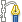

| 5. Μονοπάτια | ||
|---|---|---|
 |
Κεφάλαιο 7. Βάφοντας με το GIMP |  |
| 5. Μονοπάτια | ||
|---|---|---|
| |
Κεφάλαιο 7. Βάφοντας με το GIMP | |
Τα μονοπάτια είναι καμπύλες (γνωστές ως καμπύλες Bézier). Είναι εύκολο να μάθετε και να χρησιμοποιήσετε τα μονοπάτια στο GIMP. Για να καταλάβετε τη λογική τους και το μηχανισμό τους δείτε στο γλωσσάρι Καμπύλη Bézier ή Wikipedia [WKPD-BEZIER]. Το εργαλείο μονοπατιών είναι πολύ ισχυρό, επιτρέποντας σας να σχεδιάσετε σύνθετες φόρμες. Για να χρησιμοποιήσετε το εργαλείο μονοπατιών στο GIMP, πρέπει πρώτα να δημιουργήσετε ένα μονοπάτι κι έπειτα να σχεδιάσετε το μονοπάτι.
Στο GIMP, ο όρος “βάψιμο μονοπατιού” σημαίνει την εφαρμογή ενός ειδικού στιλ στο μονοπάτι (χρώμα, πλάτος, μοτίβο...).
Ένα μονοπάτι έχει δύο κύριους σκοπούς:
Μπορείτε να μετατρέψετε ένα κλειστό μονοπάτι σε επιλογή.
Οποιοδήποτε μονοπάτι, ανοιχτό ή κλειστό, μπορεί να βαφτεί με ποικίλους τρόπους.
Εικόνα 7.10. Παρουσίαση δημιουργίας τεσσάρων διαφορετικών μονοπατιών.
Τέσσερα παραδείγματα μονοπατιών του GIMP: ένα κλειστό πολυγωνικό, ένα ανοιχτό πολυγωνικό, ένα κλειστό καμπύλο και ένα με μίγμα ευθειών και καμπύλων τμημάτων.
Ξεκινήστε χαράσσοντας το περίγραμμα για το μονοπάτι σας. Το περίγραμμα μπορεί να τροποποιηθεί αργότερα (δείτε το εργαλείο Μονοπάτια). Για να ξεκινήσετε, επιλέξτε το εργαλείο μονοπατιών χρησιμοποιώντας μία από τις παρακάτω μεθόδους:
Πατήστε → από το μενού εικόνας.
Πατήστε το σχετικό εικονίδιο στην εργαλειοθήκη. 
Χρησιμοποιείστε το πλήκτρο συντόμευσης B.
Όταν το εργαλείο μονοπατιών επιλέγεται, ο δρομέας του ποντικιού αλλάζει σε δείκτη (βέλος) με καμπύλη. Αριστεροπατήστε στην εικόνα για να δημιουργήσετε το αρχικό σημείο του μονοπατιού. Μετακινήστε το ποντίκι σε ένα νέο σημείο και αριστεροπατήστε το ποντίκι για να δημιουργήσετε ένα άλλο σημείο συνδεμένο με το προηγούμενο. Αν και μπορείτε να δημιουργήσετε όσα σημεία επιθυμείτε, χρειάζεσθε μόνο δύο σημεία για να μάθετε για τα μονοπάτια. Ενώ προσθέτετε σημεία, ο δρομέας ποντικιού έχει “+” δίπλα στην καμπύλη που δείχνει ότι πατώντας θα προστεθεί ένα νέο σημείο. Όταν ο δρομέας του ποντικιού είναι κοντά σε τμήμα της γραμμής το “+” αλλάζει σε σταυρό με βέλη, όπως το εργαλείο μετακίνησης.
Μετακινήστε το δρομέα ποντικιού κοντά σε ένα τμήμα γραμμής (όχι στα άκρα), αριστεροπατήστε και σύρτε το τμήμα της γραμμής. Δύο γεγονότα συμβαίνουν.
Το τμήμα της γραμμής λυγίζει και καμπυλώνεται καθώς τραβιέται.
Κάθε τμήμα γραμμής έχει ένα αρχικό σημείο και ένα τελικό σημείο που σημειώνεται καθαρά. Μια “κατευθυντήρια γραμμή” τώρα προβάλλει από τα άκρα του τμήματος που μετακινήθηκε.
Το τμήμα της καμπύλης γραμμής αφήνει ένα τελικό σημείο στην ίδια κατεύθυνση, που η “κατευθυντήρια γραμμή” αφήνει το τελικό σημείο. Το μήκος της “κατευθυντήριας γραμμής” ελέγχει πόσο μακριά το τμήμα της γραμμής προβάλλει κατά μήκος της “κατευθυντήριας γραμμής” πριν καμπυλώσει προς το άλλο τελικό σημείο. Κάθε “κατευθυντήρια γραμμή” έχει ένα κενό τετράγωνο κουτί (αποκαλούμενο λαβή) στη μία άκρη. Πατήστε και σύρτε τη λαβή για να αλλάξετε την κατεύθυνση και το μήκος της “κατευθυντήριας γραμμής”.
Εικόνα 7.11. Εμφάνιση του μονοπατιού, ενώ επεξεργάζεται
Εμφάνιση του μονοπατιού, ενώ επεξεργάζεται με το εργαλείο μονοπατιών.
Το μονοπάτι αποτελείται από δύο συστατικά με ευθεία και καμπύλα τμήματα. Μαύρα τετράγωνα είναι σημεία αγκίστρωσης. Ο ανοιχτός κύκλος δείχνει την επιλεγμένη άγκυρα και τα δύο ανοιχτά τετράγωνα είναι οι συνδεμένες λαβές με την επιλεγμένη άγκυρα.